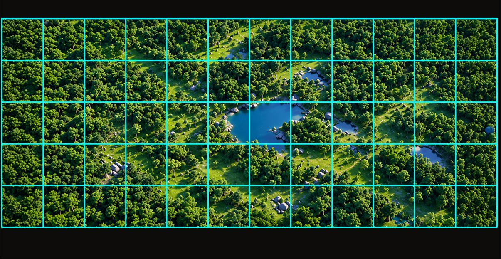
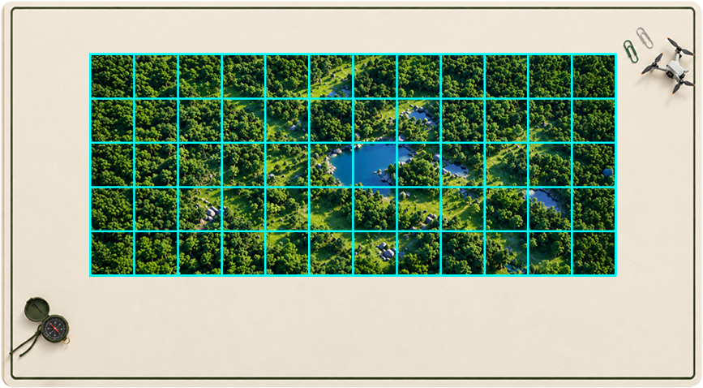
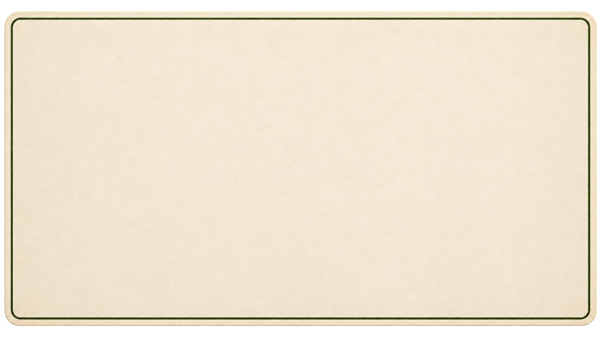
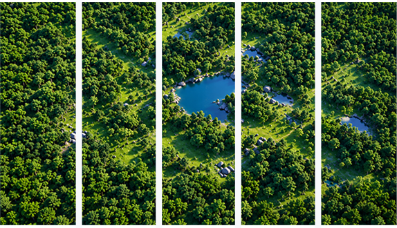
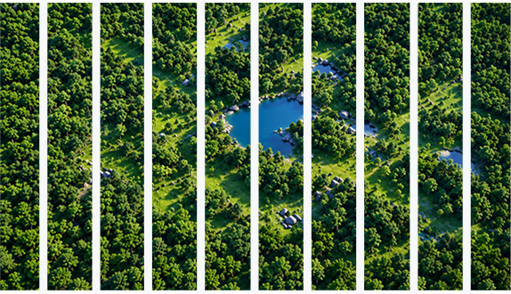
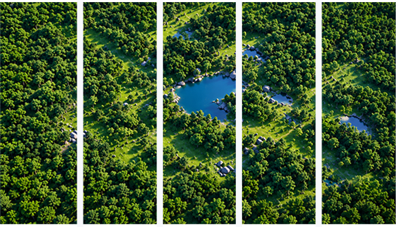
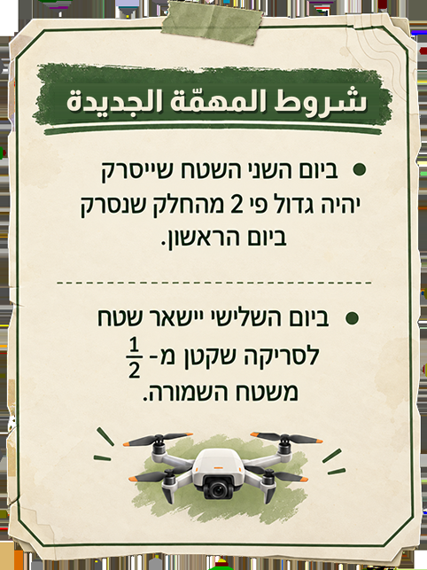
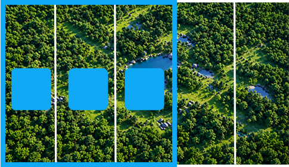
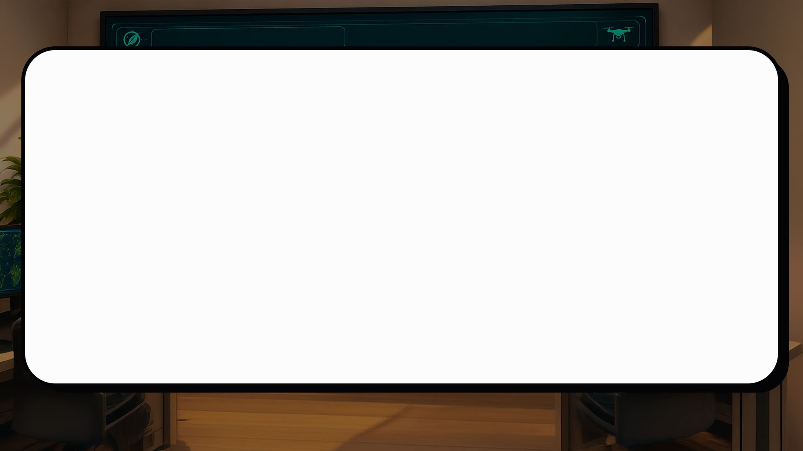
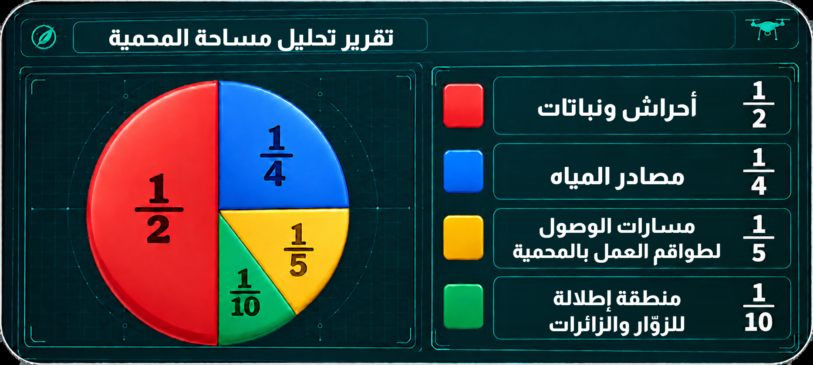

1. عليكم أن تتعرّفوا إلى أبعاد المحمية لكي تتمكّنوا من تخطيط مهمّة المسح جيّدا.
معلوم أنّ مساحة المحمية المستطيلة هي 60 كيلومترا مربّعا، وطول أحد أضلاعها 5 كيلومترات.
ما هو طول الضلع المجاور؟
اختاروا الإجابة المناسبة.

5 كيلومترات
؟ كيلومتر
مساحة المستطيل هي حاصل ضرب طولَي ضلعين متجاورين.
هذه ليست الإجابة، حاولوا مرّة أخرى.
يمكنكم النقر على زرّ المساعدة للحصول على تلميح.
إجابتك صحيحة!
مساحة المستطيل هي حاصل ضرب طولَي الضلعين المجاورين. معلوم لدينا أنّ مساحة المحمية 60 كيلومترا مربّعا وطول أحد أضلاعها 5 كيلومترات.
نُجري عمليّة قسمة لإيجاد طول الضلع المجاور:
12 = 5 : 60 ونحصل على أنّ طول الضلع هو 12 كيلومترا.
هذا خطأ – تعالوا نتعلّم من هذا
مساحة المستطيل هي حاصل ضرب طولَي الضلعين المجاورين. معلوم لدينا أنّ مساحة المحمية 60 كيلومترا مربّعا وطول أحد أضلاعها 5 كيلومترات.
نُجري عمليّة قسمة لإيجاد طول الضلع المجاور:
12 = 5 : 60 ونحصل على أنّ طول الضلع هو 12 كيلومترا.
2. كما ذُكر، يجب تقسيم مسح مساحة المحمية على ثلاثة أيام.
اقترح طاقم المخطّطين ثلاثة خيارات لتقسيم مساحة المحمية، وهي معروضة في الجدول التالي.
ما الجزء من مساحة المحمية الذي يتبقّى للمسح في اليوم الثالث في كلّ خيار منها؟
اكتبوا الإجابة المناسبة لكلّ خيار.

هذه ليست الإجابة، حاولوا مرّة أخرى.
يمكنكم النقر على زرّ المساعدة للحصول على تلميح.
إجابتك صحيحة!
هيّا ننظر إلى خيار المسح الأول.
يمثّل كلّ جزء في الرسم خُمس مساحة المحمية، فقد تمّ مسح 15 من مساحة المحمية في اليوم الأول، وتمّ مسح 15 من المساحة في اليوم الثاني أيضا.
يعني ذلك أنّه تمّ مسح 25 من مساحة المحمية في اليومين الأولين معا، ولذلك ما زال يتبقّى للمسح في اليوم الثالث 35 من مساحة المحمية.
الإجابة غير دقيقة – تعالوا نتعلّم من هذا
هيّا ننظر إلى خيار المسح الأول.
يمثّل كلّ جزء في الرسم خُمس مساحة المحمية، فقد تمّ مسح 15 من مساحة المحمية في اليوم الأول، وتمّ مسح 15 من المساحة في اليوم الثاني أيضا.
يعني ذلك أنّه تمّ مسح 25 من مساحة المحمية في اليومين الأولين معا، ولذلك ما زال يتبقّى للمسح في اليوم الثالث 35 من مساحة المحمية.
هذه ليست الإجابة، حاولوا مرّة أخرى.
يمكنكم النقر على زرّ المساعدة للحصول على تلميح.
إجابتك صحيحة!
نحسب معا:
الخيار 2 – نجمع أجزاء مساحة المحمية التي مسحتها الطائرة المسيّرة في اليوم الأول واليوم الثاني 110 + 25.
نجمع الكسرين باستخدام المقام المشترك الأصغر 10: 25 + 110 = 410 + 110 = 510
يعني ذلك أنّه يتبقّى للمسح 510 وهي 12 من مساحة المحمية.
هذا خطأ – تعالوا نتعلّم من هذا
نحسب معا:
الخيار 2 – نجمع أجزاء مساحة المحمية التي مسحتها الطائرة المسيّرة في اليوم الأول واليوم الثاني 110 + 25.
نجمع الكسرين باستخدام المقام المشترك الأصغر 10: 25 + 110 = 410 + 110 = 510
يعني ذلك أنّه يتبقّى للمسح 510 وهي 12 من مساحة المحمية.
هذه ليست الإجابة، حاولوا مرّة أخرى.
يمكنكم النقر على زرّ المساعدة للحصول على تلميح.
إجابتك صحيحة!
نحسب معا:
الخيار 3 – نجمع أجزاء مساحة المحمية التي مسحتها الطائرة المسيّرة في اليوم الأول واليوم الثاني 16 + 14.
يلزم لجمع 14 + 16 إيجاد مقام مشترك، والمقام المشترك الأصغر هو 12:
14 + 16 = 312 + 212 = 512
يعني ذلك أنّه ما زال يتبقّى للمسح 712 من المساحة.
هذا خطأ – تعالوا نتعلّم من هذا
نحسب معا:
الخيار 3 – نجمع أجزاء مساحة المحمية التي مسحتها الطائرة المسيّرة في اليوم الأول واليوم الثاني 16 + 14.
يلزم لجمع 14 + 16 إيجاد مقام مشترك، والمقام المشترك الأصغر هو 12:
14 + 16 = 312 + 212 = 512
يعني ذلك أنّه ما زال يتبقّى للمسح 712 من المساحة.
هيّا ننظر إلى خيار المسح الأول.
هذه مساحة المحمية مقسّمة إلى أخماس.

هيّا ننظر إلى خيار المسح الثاني.
مساحة المحمية مقسّمة إلى أعشار في الرسم العلوي.
المحمية نفسها مقسّمة إلى أخماس في الرسم السفلي.
كم عُشرا يوجد في كلّ 15؟
15 = ?10


عبّروا عن أجزاء مساحات المحمية باستخدام مقام مشترك.
3. أ. أيّ خيار يكون فيه الجزء الذي مُسح في اليوم الأول 25% من مساحة المحمية؟
انقروا على الخيار المناسب في الجدول.
14 = ?100
هذه ليست الإجابة، حاولوا مرّة أخرى.
يمكنكم النقر على زرّ المساعدة للحصول على تلميح.
إجابتك صحيحة!
تمّ في الخيار 3، في اليوم الأول، مسح 25% من مساحة المحمية.
14 = 25100
هذا خطأ – تعالوا نتعلّم من هذا
تمّ في الخيار 3، في اليوم الأول، مسح 25% من مساحة المحمية.
14 = 25100
3. ب. يبدو، بحسب توقّعات الطقس، أنّ المطر سيهطل في اليوم الثالث من المسح. اقترحت مرام مسح أكبر مساحة ممكنة في اليومين الأولين، لكي تبقى للمسح في اليوم الثالث أصغر مساحة.
أيّ خيار من الخيارات الثلاثة التي أمامكم يبقى فيه الجزء الأصغر للمسح في اليوم الثالث؟
انقروا على الخيار المناسب في الجدول.
حاولوا مقارنة كِبَر الأجزاء المتبقّية.
لوّنّا في الرسوم التي أمامكم أجزاء المحمية التي سيتمّ مسحها في اليوم الثالث في كلّ خيار.
أيّ منها تكون فيه المساحة المتبقّية للمسح في اليوم الثالث هي الأصغر؟
هذه ليست الإجابة، حاولوا مرّة أخرى.
يمكنكم النقر على زرّ المساعدة للحصول على تلميح.
إجابتك صحيحة!
نرى من الجدول أنّه في الخيار 1 يتبقّى للمسح في اليوم الثالث 35 من المساحة، وفي الخيار 3 يتبقّى للمسح 712 من المساحة.
تبقّت في هذين الخيارين مساحة أكبر من 12 من مساحة المحمية.
يتبقّى للمسح في الخيار 2 بالضبط 12 من المساحة، وهي أصغر مساحة تبقّت للمسح، ولذلك الخيار 2 هو المناسب.
هذا خطأ – تعالوا نتعلّم من هذا
نرى من الجدول أنّه في الخيار 1 يتبقّى للمسح في اليوم الثالث 35 من المساحة، وفي الخيار 3 يتبقّى للمسح 712 من المساحة.
تبقّت في هذين الخيارين مساحة أكبر من 12 من مساحة المحمية.
يتبقّى للمسح في الخيار 2 بالضبط 12 من المساحة، وهي أصغر مساحة تبقّت للمسح، ولذلك الخيار 2 هو المناسب.
4. أعدّوا خطّة مسح جديدة تلائم الشروط الجديدة. استعينوا بالتطبيق الموجود في الأعلى، واكتبوا أيّ جزء من مساحة المحمية سيُمسح في كلّ يوم من الأيام:

شروط المهمّة الجديدة
- ستكون المساحة التي ستُمسح في اليوم الثاني أكبر بمرّتين من المساحة التي مُسحت في اليوم الأول.
- ستكون المساحة التي ستتبقّى للمسح في اليوم الثالث أصغر من 12 من مساحة المحمية.
تذكّروا: يجب أن يتمّ المسح في ثلاثة أيام.
مثال: إذا كانت الطائرة المسيّرة تمسح في اليوم الأول 14 من مساحة المحمية، فماذا سيحدث في اليوم الثاني والثالث؟
هذه ليست الإجابة، حاولوا مرّة أخرى.
يمكنكم النقر على زرّ المساعدة للحصول على تلميح.
إجابتك صحيحة!
يمكن العمل بحسب الترتيب التالي لبناء خطّة تلائم الشروط:
- نختار الجزء الذي سيُمسح في اليوم الأول.
- نضرب هذا الجزء في 2 فنحصل على الجزء الذي سيُمسح في اليوم الثاني.
- نجمع الجزأين، ونطرحهما من الواحد الصحيح (مساحة المحمية كلّها) – وهكذا نحصل على المساحة التي تبقّت في اليوم الثالث.
- نتحقّق من أنّ المساحة المتبقّية للمسح في اليوم الثالث أصغر من 12
- نتحقّق من أنّ مجموع الأجزاء كلّها يساوي الواحد الصحيح.
أمامكم خياران كمثال:
| اليوم الأول | اليوم الثاني | اليوم الثالث | |
|---|---|---|---|
| الخيار 1 | 310 | 610 | 110 |
| الخيار 2 | 15 | 25 | 25 |
هذا خطأ – تعالوا نتعلّم من هذا
يمكن العمل بحسب الترتيب التالي لبناء خطّة تلائم الشروط:
- نختار الجزء الذي سيُمسح في اليوم الأول.
- نضرب هذا الجزء في 2 فنحصل على الجزء الذي سيُمسح في اليوم الثاني.
- نجمع الجزأين، ونطرحهما من الواحد الصحيح (مساحة المحمية كلّها) – وهكذا نحصل على المساحة التي تبقّت في اليوم الثالث.
- نتحقّق من أنّ المساحة المتبقّية للمسح في اليوم الثالث أصغر من 12
- نتحقّق من أنّ مجموع الأجزاء كلّها يساوي الواحد الصحيح.
أمامكم خياران كمثال:
| اليوم الأول | اليوم الثاني | اليوم الثالث | |
|---|---|---|---|
| الخيار 1 | 310 | 610 | 110 |
| الخيار 2 | 15 | 25 | 25 |
5. اقترح أحد أعضاء الطاقم أن يُمسح في اليوم الأول 25 من مساحة المحمية.
هل يلبّي هذا الاقتراح شروط المهمّة؟
شروط المهمّة الجديدة
- ستكون المساحة التي ستُمسح في اليوم الثاني أكبر بمرّتين من المساحة التي مُسحت في اليوم الأول.
- ستكون المساحة التي ستتبقّى للمسح في اليوم الثالث أصغر من 12 من مساحة المحمية.
تذكّروا: يجب أن يتمّ المسح في ثلاثة أيام.
ما الجزء من المحمية الذي سيُمسح في اليومين الأول والثاني معا بحسب الاقتراح؟
هذه ليست الإجابة، حاولوا مرّة أخرى.
يمكنكم النقر على زرّ المساعدة للحصول على تلميح.
هذا الاقتراح لا يلبّي شروط المهمّة
انقروا على الفيديو.
هذا الاقتراح لا يلبّي شروط المهمّة
انقروا على الفيديو.
6. اختار أعضاء الطاقم الاقتراح التالي:
| جزء المساحة الذي سيُمسح | اليوم الأول | اليوم الثاني | اليوم الثالث |
|---|---|---|---|
| اقتراح للأجزاء التي ستُمسح | 310 | 35 | 110 |
معلوم أنّ مساحة المحمية 60 كيلومترا مربّعا.
احسبوا المساحة التي مُسحت في اليوم الثاني
اختاروا الإجابة الصحيحة:
ابدؤوا بقسمة مساحة المحمية على 5 لتحسبوا عدد الكيلومترات المربّعة في 25 من 60 كيلومترا مربّعا.
هذه ليست الإجابة، حاولوا مرّة أخرى.
يمكنكم النقر على زرّ المساعدة للحصول على تلميح.
إجابتك صحيحة!
مساحة المحمية كلّها 60 كيلومترا مربّعا، وقد تمّ مسح 35 من مساحة المحمية في اليوم الثاني. نقسّم مساحة المحمية إلى 5 أجزاء متساوية.
12 = 5 : 60
يعني ذلك أنّ كلّ 15 من مساحة المحمية تساوي 12 كيلومترا مربّعا.
ينتج عن ذلك أنّ 35 من مساحة المحمية تساوي 36 كيلومترا مربّعا.

12 كيلومترا مربّعا12 كيلومترا مربّعا12 كيلومترا مربّعاهذا خطأ – تعالوا نتعلّم من هذا
مساحة المحمية كلّها 60 كيلومترا مربّعا، وقد تمّ مسح 35 من مساحة المحمية في اليوم الثاني. نقسّم مساحة المحمية إلى 5 أجزاء متساوية.
12 = 5 : 60
يعني ذلك أنّ كلّ 15 من مساحة المحمية تساوي 12 كيلومترا مربّعا.
ينتج عن ذلك أنّ 35 من مساحة المحمية تساوي 36 كيلومترا مربّعا.

7. أمامكم المخطّط الذي يعرض تقسيم مساحة المحمية بحسب المناطق.
ما الخطأ الذي اكتشفته مرام؟
اختاروا الادّعاء الصحيح:

احسبوا مجموع الأجزاء
هذه ليست الإجابة، حاولوا مرّة أخرى.
يمكنكم النقر على زرّ المساعدة للحصول على تلميح.
إجابتك صحيحة!
نجد المقام المشترك لجميع الكسور ونجمعها لحساب مجموع الكسور المعروضة في المخطّط:
12 + 14 + 15 + 110 = 1020 + 520 + 420 + 220 = 2120 = 1 120
نحصل على أنّ مجموع الأجزاء هو: 2120 = 1 120
هذا خطأ – تعالوا نتعلّم من هذا
نجد المقام المشترك لجميع الكسور ونجمعها لحساب مجموع الكسور المعروضة في المخطّط:
12 + 14 + 15 + 110 = 1020 + 520 + 420 + 220 = 2120 = 1 120
نحصل على أنّ مجموع الأجزاء هو: 2120 = 1 120
تقرير تحليل مساحة المحمية
- أحراش ونباتات12
- مصادر المياه14
- مسارات الوصول لطواقم العمل بالمحمية320
- منطقة إطلالة للزوّار والزائرات110
8. بدأ الجزء الثاني من مهمّة المسح: عدّ الحيوانات.
تبيّن من تحليل بيانات الطائرة المسيّرة أنّه يعيش في كلّ 4 كيلومترات مربّعة في المعدّل 2 من الغزلان.
مساحة المحمية 60 كيلومترا مربّعا.
كم غزالا يوجد في المحمية كلّها؟
اكتبوا الإجابة.
يوجد في كلّ 4 كيلومترات مربّعة في المعدّل 2 من الغزلان،
يوجد في 12 كيلومترا مربّعا في المعدّل 6 من الغزلان.
هذه ليست الإجابة، حاولوا مرّة أخرى.
يمكنكم النقر على زرّ المساعدة للحصول على تلميح.
إجابتك صحيحة!
معلوم لدينا أنّ مساحة المحمية 60 كيلومترا مربّعا. نقسّم مساحة المحمية إلى وحدات مساحة، مساحة كلّ منها 4 كيلومترات مربّعة: 15 = 4 : 60 .
نحصل على 15 وحدة مساحة في المحمية، مساحة كلّ منها 4 كيلومترات مربّعة.
نضرب عدد الغزلان في عدد وحدات المساحة لأنّه يوجد في كلّ 4 كيلومترات مربّعة في المعدّل 2 من الغزلان: 30 = 2 × 15 .
يوجد في المحمية 30 غزالا.
هذا خطأ – تعالوا نتعلّم من هذا
معلوم لدينا أنّ مساحة المحمية 60 كيلومترا مربّعا. نقسّم مساحة المحمية إلى وحدات مساحة، مساحة كلّ منها 4 كيلومترات مربّعة: 15 = 4 : 60 .
نحصل على 15 وحدة مساحة في المحمية، مساحة كلّ منها 4 كيلومترات مربّعة.
نضرب عدد الغزلان في عدد وحدات المساحة لأنّه يوجد في كلّ 4 كيلومترات مربّعة في المعدّل 2 من الغزلان: 30 = 2 × 15 .
يوجد في المحمية 30 غزالا.
اكتملت المهمّة!
نجحتم في إكمال مهمّة رسم خريطة محمية اللوز الطبيعيّة!
حصل طاقم علماء البيئة، بفضل عملكم، على صورة كاملة للمحمية، ليتمكّن من اتّخاذ قرارات تساعد على الحفاظ على المحمية والبحث عن حلّ لمشكلة جفاف مصادر المياه.
هذا كلّ شيء، انتهت المهمّة.
علامتك هي
يجب إغلاق المهمّة بالنقر على X.
الآن أغلقوا الوحدة التعليمية
وعودوا للإجابة عن أسئلة المساق في
يمكنكم إغلاق هذه النافذة.